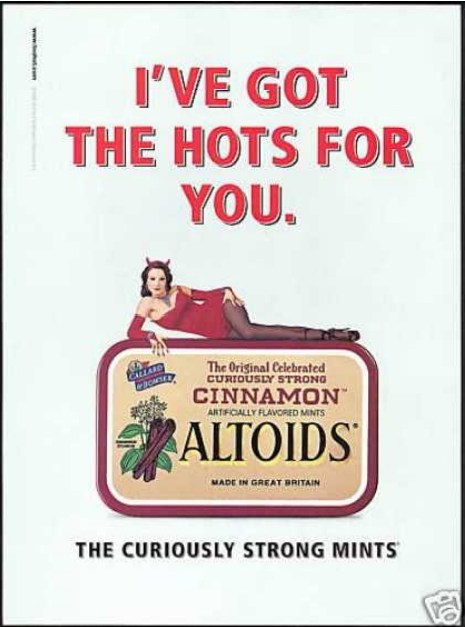
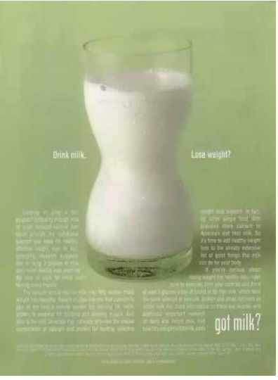
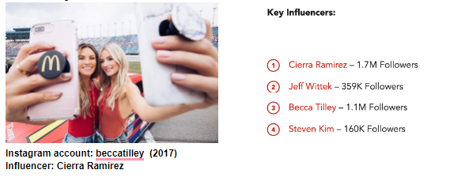
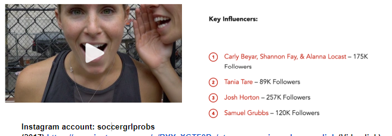

The Early 2000s to Present Day
During this decade (2000-2010), the idea of the male gaze in food advertising is still extremely prevalent. As one views the images selected, one can see how the implied sexuality and shape of a woman’s body is consistently focused on and presented. It also seems that during this era, advertisements became more provocative and scandalous in how women were being portrayed. Many advertisers in the food industry were hyper-focused on how they would include the framing of the male gaze. Yet, unfortunately they also pinpointed how they would be getting female consumers to engage in the behavior they were presented with.
Advertisement 1 Analysis
This advertisement is for the Altoid breath mint brand, specifically their cinnamon flavor. However, aside from mints, this is not the only thing Altoids is trying to sell to their audience, The very top of the advertisement text states: “I’VE GOT THE HOTS FOR YOU.” This text indicates that the woman has strong feelings of sexual attraction for consumers. As one continues to move through the advertisement, a woman in devil horns and a red outfit paired with tights can be seen laying on her side in a seductive manner. The male gaze is extremely prevalent in this image. Not only is the woman in a flirtatious position on top of the Altoid box, but the devil horns on top of her head indicate that she is behaving in a “naughty” way. This advertisement is creating an oversexualized image of women, when it is supposed to be selling a new flavor of mints. Moving toward the end of the image, the text states: “THE CURIOUSLY STRONG MINTS.” Since the only other image besides the box of Altoids is a woman, one can assume that the ending text directly relates to her. The word “curiously” creates an air of mystery around the woman, implying that she, herself, is the curious one. As one circles back to the above information, many people may conclude she must be curious about her implied provocative relationship with consumers. The advertisement is selling a fabricated image of their product by pleasing the eyes of male viewers and appealing to their sense of masculinity.
Advertisement 2 Analysis
This advertisement was done by the “Got Milk?” campaign in order to encourage the consumption of milk. Although this image is not supposed to be related to food, the text implies that milk is something consumers should be drinking in place of actual meals. Similarly, the image of a glass of milk that has been placed in the middle of the entire advertisement appears to have a type of curvature. The campaign chose this image, knowing that women are the most susceptible to being attracted to achieving a figure such as the one presented on the advertisement. This type of figure is also what most women think appeals more to a man. However, it is undeniable that this body shape does not apply to all women, and can be extremely damaging for those who are already self-conscious. Also, the advertisement includes the text: “Drink milk. Lose weight?” indicating that women should be drinking milk to lose weight and achieve that particular figure. This campaign implies that drinking milk is a healthy way to lose weight. Not only is this not true, but they are also encouraging the replacement of food with liquids. Hence, this advertisement is not selling or encouraging consumers to drink milk. It is amplifying stereotypical images of women, and insisting this is the right choice to make. It also reiterates that women should be seen solely for their bodies, so that they can be accepted in society. Having a curvy glass of milk in the center indirectly suggests that all women should want to look this way, and that this type of shape is essentially perfect--it is ideal. Women should not be held to these types of standards only to appeal to the eyes of others. This advertisement encourages women to drink milk, but it does so in a way that is damaging, unrealistic, and selfish in order to appeal to male standards of beauty.
 Advertisement 2 Analysis
The next decade will cover the years of 2010 until present day. From our examples during this decade, one can see that the male gaze is seemingly subtle, yet still prevalent. Instead of showing images of women’s bodies in a sexualized or inviting manner, advertisers have shifted to a different strategy. This industry chooses to promote more collaborations with celebrities and influencers on social media. Yet, during a 2017 study, the evidence shows that even still female promoters are receiving the most attention.
Both of these examples are presented from popular accounts on Instagram who have been chosen to advertise for the fast food industry. One of the accounts, “beccatilley,” posted an advertisement for McDonalds. This post alone generated over 118,000 likes and received an engagement rate of 13.7%. Similarly, the Instagram account, “soccergrlprobs,” featuring former division-1 soccer players, posted an advertisement for Burger King. This account received 106,000 likes and an average engagement rate of 3%. In comparison to some of the other influencers posting advertisements for fast food companies, their likes and engagement rates fall short behind these accounts. While this type of advertisement scheme is targeted for millennial audiences, the male gaze continues to exist in a disguised manner. One may suggest that the female influencer collaborations are receiving the most attention, because their appearance on social media is one that viewers prefer much more than males. Hence, women are still being objectified and even held on a pedestal for “looking the part.” When people look at these collaborations, they are not seeing the food or the brand. Rather, they are paying more attention to how the women look, and this is why female influencers are receiving the most attraction along with much larger followings.
Citation: “Case Study: Fast Food Advertising With Top Instagrammers .” Mediakix, Mediakix, 2021, https://mediakix.com/blog/fast-food-advertising-instagram-influencers/.
Citation: Vintage ad browser. (n.d.). Retrieved November 29, 2021, from https://www.vintageadbrowser.com/.